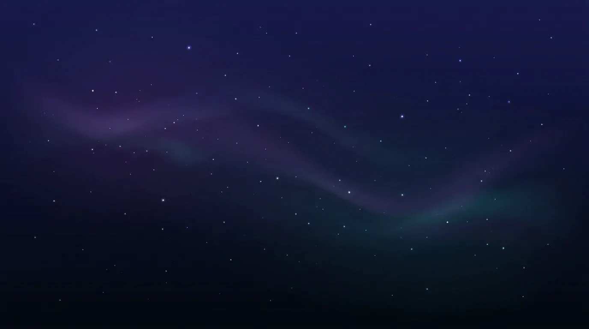
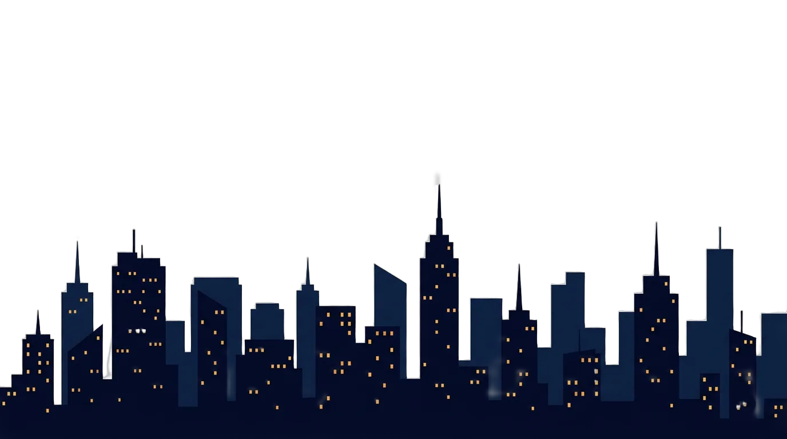

This whole page is images + code — no video file anywhere. Scroll slowly, then scrub back up: the scene rewinds, exactly like a video timeline.


City, clouds, sky — separate cut-out images.
Scroll up and it flies backwards. Try it.
GSAP ScrollTrigger, scrub: true, ~80 lines of code.
Layered art + GSAP ScrollTrigger + Lenis smooth scroll. Works in React, plain HTML, or dropped into a WordPress theme.
Built by NexaWebDev